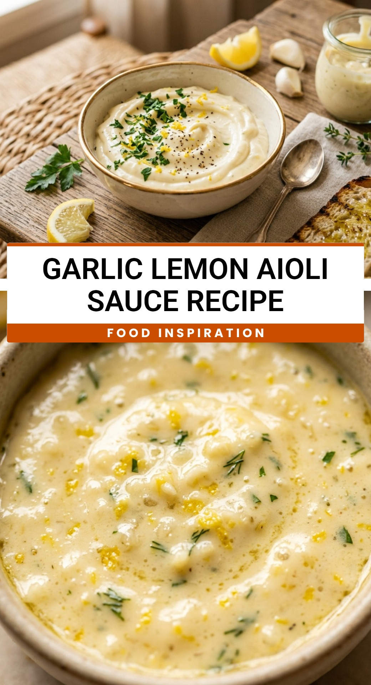

Garlic Lemon Aioli Sauce Recipe
October 1, 2026

Elevate your next meal with this creamy, zesty Garlic Lemon Aioli Sauce Recipe. Whether you are dipping crispy french fries, drizzling it over grilled seafood, or spreading it on a gourmet burger, this sauce adds a professional touch to any dish. It is a simple yet sophisticated condiment that balances the bite of fresh garlic with the bright acidity of citrus.
Recipe Information
Prep Time: 5 minutes
Cook Time: 0 minutes
Total Time: 5 minutes
Servings: 8
Difficulty Level: Easy
Nutrition Information
Calories per serving: 95 kcal
Protein: 0.2g
Carbohydrates: 1g
Fat: 10g
Fiber: 0g
Sugar: 0.1g
Sodium: 85mg